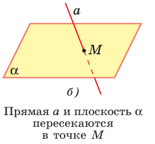
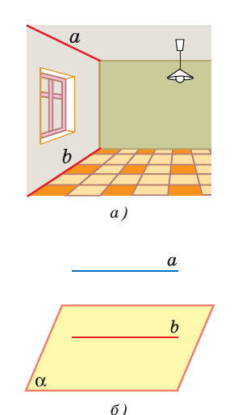
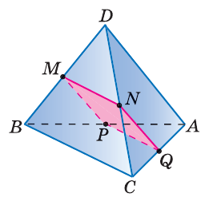

Геометрия · 10 класс
02
§ 1 · п. 4–6
Параллельность прямых и плоскостей
Когда прямые не пересекаются — и почему этого мало
Определение
Параллельные прямые
ОпределениеДве прямые в пространстве называются параллельными, если они лежат в одной плоскости и не пересекаются.
В пространстве «не пересекаются» ≠ «параллельны».
Геометрия · 10 классУрок 2 · Параллельность прямых, прямой и плоскости
Теорема
О параллельных прямых
ТеоремаЧерез любую точку пространства, не лежащую на данной прямой, проходит прямая, параллельная данной, и притом только одна.
Идея: перейти в плоскость прямой и точки — там работает планиметрия.
Геометрия · 10 классУрок 2 · Параллельность прямых, прямой и плоскости
Часть 1
Лемма и три прямые
Лемма
Параллельные прямые и плоскость
ЛеммаЕсли одна из двух параллельных прямых пересекает плоскость, то и другая пересекает эту плоскость.
Параллельные прямые ведут себя одинаково: обе пересекают плоскость — или обе нет.
Геометрия · 10 классУрок 2 · Параллельность прямых, прямой и плоскости
Теорема
О трёх прямых
ТеоремаЕсли две прямые параллельны третьей, то они параллельны.
a ∥ c, b ∥ c ⟹ a ∥ b
a ∥ c, b ∥ c ⟹ a ∥ b
Доказываем две вещи: лежат в одной плоскости и не пересекаются.
Геометрия · 10 классУрок 2 · Параллельность прямых, прямой и плоскости
Часть 2
Прямая и плоскость
Три случая
Прямая и плоскость

а) прямая лежит в плоскости

б) одна общая точка

в) нет общих точек
Геометрия · 10 классУрок 2 · Параллельность прямых, прямой и плоскости
Признак
Параллельность прямой и плоскости
ПризнакЕсли прямая, не лежащая в плоскости, параллельна какой-нибудь прямой этой плоскости, то она параллельна плоскости.
a ∥ b, b ⊂ α ⟹ a ∥ α
Геометрия · 10 классУрок 2 · Параллельность прямых, прямой и плоскости
Свойства
Два важных свойства
Свойство 1°Плоскость проходит через прямую a ∥ α и пересекает α ⟹ линия пересечения ∥ a.
Свойство 2°Одна из параллельных прямых ∥ плоскости ⟹ вторая тоже параллельна ей или лежит в ней.
Геометрия · 10 классУрок 2 · Параллельность прямых, прямой и плоскости
Разбираем
Задача № 17
- M, N, Q, P — середины DB, DC, AC, AB; AD = 12, BC = 14. Найти периметр MNQP.
- MN и PQ — средние линии с основанием BC: по 7 см.
- MP и NQ — средние линии с основанием AD: по 6 см.
- Периметр = 7 + 6 + 7 + 6 = 26 см.

Рис. 17
Геометрия · 10 классУрок 2 · Параллельность прямых, прямой и плоскости
Главный приём
Середины → средняя линия
Видишь середины двух сторон треугольника — проводи среднюю линию. Она параллельна третьей стороне и равна её половине.
Это главный источник параллельных прямых в задачах № 22–31.
Геометрия · 10 классУрок 2 · Параллельность прямых, прямой и плоскости
Решаем
№ 16–21
№ 16
Параллельные прямые a и b лежат в плоскости α. Докажите, что прямая c, пересекающая a и b, также лежит в α.
№ 18
Точка C на отрезке AB. Через A — плоскость, через B и C — параллельные прямые, пересекающие её в B₁ и C₁. Найдите CC₁: а) C — середина AB, BB₁ = 7 см; б) AC : CB = 3 : 2, BB₁ = 20 см.
№ 19
Стороны AB и BC параллелограмма ABCD пересекают плоскость α. Докажите, что прямые AD и DC также пересекают α.
№ 21
Треугольники ABC и ABD не лежат в одной плоскости. Докажите, что любая прямая, параллельная CD, пересекает плоскости этих треугольников.
Геометрия · 10 классУрок 2 · Параллельность прямых, прямой и плоскости
Решаем
№ 22–29
№ 22
Точки A и B лежат в плоскости α, точка C — нет. Докажите, что прямая через середины AC и BC параллельна α.
№ 23
Точка M не лежит в плоскости прямоугольника ABCD. Докажите, что прямая CD параллельна плоскости ABM.
№ 27
Точка C на отрезке AB, AB : BC = 4 : 3. Отрезок CD = 12 см параллелен плоскости α, проходящей через B. Докажите, что прямая AD пересекает α в некоторой точке E, и найдите AE.
№ 29
В трапеции ABCD основание BC = 12 см. Точка M вне плоскости трапеции, K — середина BM. Докажите, что плоскость ADK пересекает MC в некоторой точке H, и найдите KH.
Геометрия · 10 классУрок 2 · Параллельность прямых, прямой и плоскости
Дома
№ 18, 23, 27, 30
Признак — с обоими условиями